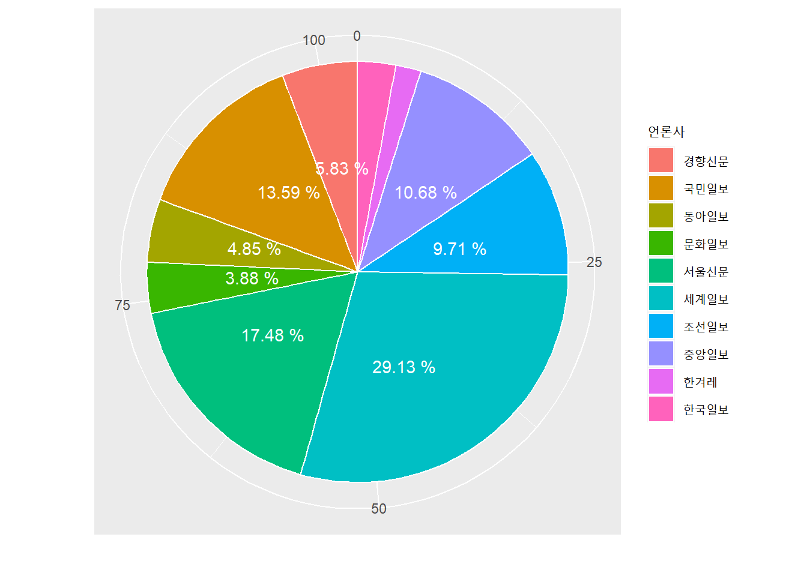
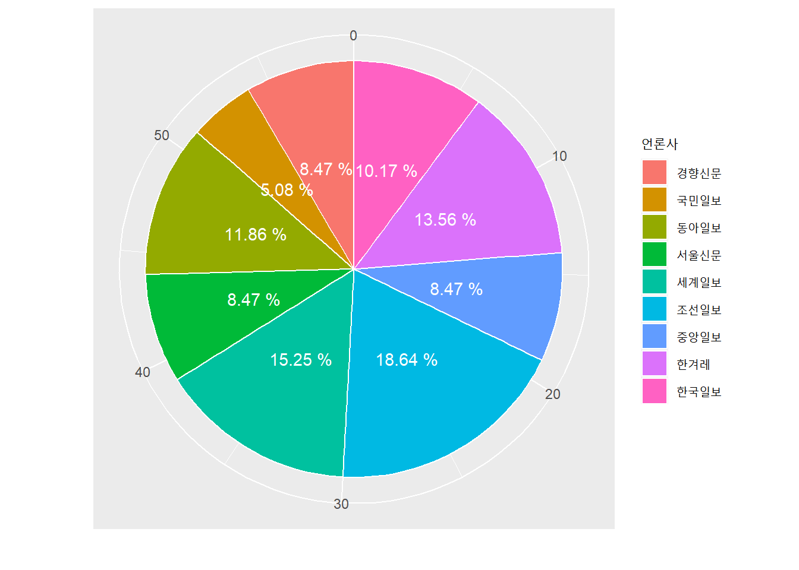
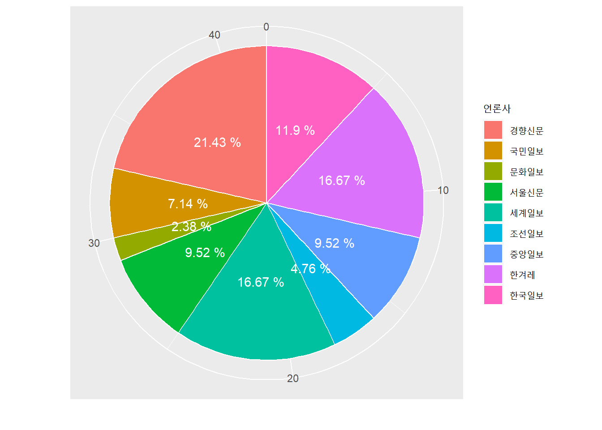
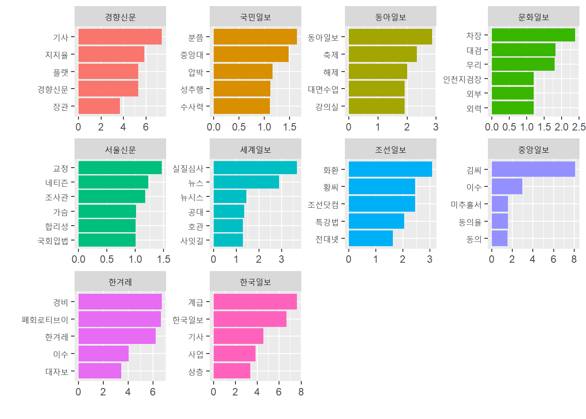
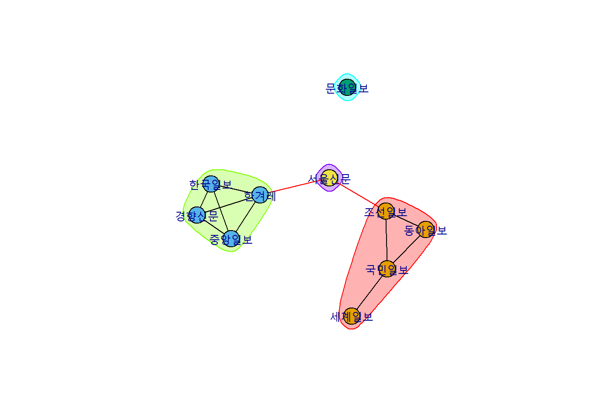
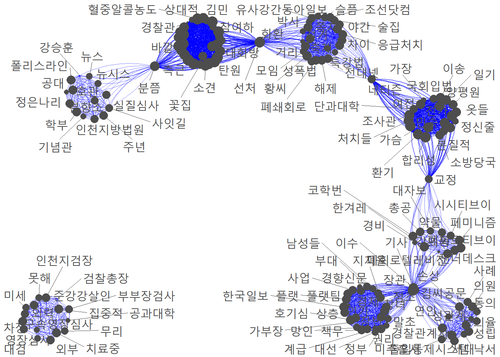

[1] 362 43 Network Analysis을 중심으로
3.1 개요
본 문서는 1편에서 진행한 k-means clustering method로 추출한 기사를 군집 별 데이터 분석 및 단어 빈도 분석, 의미연결망 분석을 진행한 내용을 담고 있으며, 분석 도구는 R로 진행하였다. 아무래도 의미연결망 분석이나 빈도 시각화에 있어선 아직까지 Python보다는 R이 더 우수한 경향이 있기에, R로 변경하여 분석을 이어갔다.
분석에 사용된 총 기사의 갯수는 다음과 같다.
3.2 단어 분석
먼저 기사에 사용된 단어를 분석한 결과, 총 4190개로 나타났다.
[1] 4190 2상위 15개의 주요 단어를 추출한 결과는 다음과 같다.
# A tibble: 15 × 2
단어 n
<chr> <int>
1 인하대 1551
2 경찰 1244
3 사건 1157
4 혐의 1143
5 피해자 1046
6 건물 973
7 성폭행 963
8 추락 943
9 캠퍼스 704
10 사망 633
11 발견 548
12 대학 493
13 여성 484
14 학교 476
15 조사 4463.3 보도 빈도 분석
언론사 별 보도 빈도는 다음과 같다.
inha %>%
group_by(언론사) %>%
tally() %>%
arrange(desc(n)) %>% gt() %>% tab_header('언론사 별 보도 빈도') %>%
cols_label(언론사 = "언론사", n = '빈도')| 언론사 별 보도 빈도 | |
| 언론사 | 빈도 |
|---|---|
| 세계일보 | 81 |
| 서울신문 | 45 |
| 국민일보 | 40 |
| 조선일보 | 36 |
| 동아일보 | 35 |
| 중앙일보 | 35 |
| 경향신문 | 26 |
| 한겨레 | 24 |
| 한국일보 | 24 |
| 문화일보 | 16 |
보도 빈도만 두고 본 결과, 3개월의 기간 동안 해당 어젠다를 중점적으로 다룬 언론사는 세계일보였다. 그 외에는 전반적으로 비슷한 수준의 보도를 진행하였다.
3.4 군집 별 보도 분석
이전에 기사 필터링을 진행하여 나타난 군집들의 양상을 근거로 언론사들의 보도 스탠스를 유추하여 보았다.
군집 별 기사 빈도는 다음과 같다.
inha %>%
group_by(군집) %>%
tally() %>%
arrange(desc(n)) %>% gt() %>% tab_header('군집 별 기사 빈도') %>%
cols_label(군집 = "군집", n = '빈도')| 군집 별 기사 빈도 | |
| 군집 | 빈도 |
|---|---|
| 인하대 사건 조사보도 | 103 |
| 가해자 재판 | 75 |
| 인하대 사건 그 이후 | 59 |
| 젠더 이슈 | 42 |
| 가해자 체포 | 40 |
| 학교 측 가해자 징계 | 29 |
| 리멤버 0715 | 14 |
이들 중 언론사의 어젠다 설정 방향을 유추할 수 있는 군집인 “인하대 사건 조사보도”, “인하대 사건 그 이후”, “젠더 이슈”를 추출하여 언론사 별 보도 비율을 확인하였다.
먼저 인하대 사건 조사보도 군집에 해당하는 기사들의 언론사 구성 비율이다
inha %>%
filter(군집 == '인하대 사건 조사보도') %>%
group_by(언론사) %>%
tally() %>%
arrange(desc(n)) %>%
ggplot(aes(x = "", y = n, fill = 언론사))+
geom_bar(width = 1, stat = 'identity', color = "white")+
theme(axis.text.y = element_blank(),axis.ticks = element_blank(), legend.text = element_text(size = 9))+
geom_text(aes(label = paste(round(n/sum(n)*100, 2),"%")),
position = position_stack(vjust = 0.6),
check_overlap = TRUE,
color = 'white')+
coord_polar('y', start = 0)+
xlab("")+
ylab("")
그 다음 인하대 사건 그 이후 군집에 해당하는 기사들의 언론사 구성 비율이다
inha %>%
filter(군집 == '인하대 사건 그 이후') %>%
group_by(언론사) %>%
tally() %>%
arrange(desc(n)) %>%
ggplot(aes(x = "", y = n, fill = 언론사))+
geom_bar(width = 1, stat = 'identity', color = "white")+
theme(axis.text.y = element_blank(),axis.ticks = element_blank(), legend.text = element_text(size = 9))+
geom_text(aes(label = paste(round(n/sum(n)*100, 2),"%")),
position = position_stack(vjust = 0.5),
check_overlap = TRUE,
color = 'white')+
coord_polar('y', start = 0)+
xlab("")+
ylab("")
마지막으로 젠더 이슈에 대한 기사들의 언론사 구성 비율이다.
inha %>%
filter(군집 == '젠더 이슈') %>%
group_by(언론사) %>%
tally() %>%
arrange(desc(n)) %>%
ggplot(aes(x = "", y = n, fill = 언론사))+
geom_bar(width = 1, stat = 'identity', color = "white")+
theme(axis.text.y = element_blank(),axis.ticks = element_blank(), legend.text = element_text(size = 9))+
geom_text(aes(label = paste(round(n/sum(n)*100, 2),"%")),
position = position_stack(vjust = 0.5),
check_overlap = TRUE,
color = 'white')+
coord_polar('y', start = 0)+
xlab("")+
ylab("")
3.5 언론사 별 단어 분석
언론사 별로 주로 사용한 단어는 다음과 같다.
inha.words %>%
slice_max(n, n = 10) %>%
ggplot(aes(x = n, y = reorder_within(단어, n, 언론사), fill = 언론사)) +
geom_col(show.legend = F) +
facet_wrap(~ 언론사, scales = 'free') +
scale_y_reordered()+
xlab("")+
ylab("")
tf-idf를 활용하여 단어 별 상대 빈도를 도출했다.
상대 빈도 분석 결과는 다음과 같다.
tfidf.df %>%
slice_max(score, n = 5) %>%
ggplot(aes(x = score, y = reorder_within(단어, score, 언론사), fill = 언론사)) +
geom_col(show.legend = F) +
facet_wrap(~ 언론사, scales = 'free') +
scale_y_reordered()+
xlab("")+
ylab("")
3.6 Press Network Analysis
먼저, 언론사 간 네트워크 분석을 실시했다.
본 분석은 tf-idf로 상대 빈도 분석을 진행한 데이터를 기준으로, 공동으로 등장하는 단어에 기반하여 네트워크 분석을 실시했다.
분석 결과의 정확성 확보를 위해 한국어가 아닌 단어들(영문, 숫자 등)은 분석에서 제외했다.
또한 네트워크 분석과 함께 군집화를 진행했다. 문서 간의 유사도가 높은 네트워크를 중심으로 군집을 형성했다. 유사도 판정 기준은 분석에 사용한 프로그래밍 언어인 R의 유사도 검정 기능을 활용했다.
네트워크 분석 결과는 다음과 같다.
plot(clust, press.nt)
3.7 Sementic Network Analysis
마지막으로 단어 간의 의미 연결망 분석을 실시했다. 네트워크 분석의 경우, 데이터를 통해 동시 출현 단어 행렬을 형성하고, 이를 토대로 quenteda를 활용하여 네트워크 분석을 시도했다.
분석 결과는 다음과 같다.
textplot_network(fc,
min_freq = 2,
edge_alpha = 0.5,
edge_color = "blue",
vertex_size = size,
edge_size = 0.5)